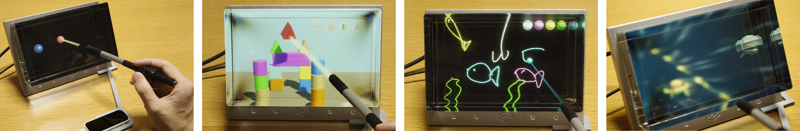

Abstract. In this work, a ray-casting-based three-dimensional (3D) pointing and dragging interface for naked-eye stereoscopic displays is proposed. When a user holds a stylus and points it to a display, the proposed system displays a ray, which extends from the stylus to the virtual space in the display. This ray can be used to interact with objects in the virtual space. By conducting a user study, we found that the proposed method allows users to perform 3D pointing with smaller hand movements compared to a hand-capture-based interface. A model, which extends Fitts’s law, is also proposed. This model is capable of well predicting the time required for a 3D pointing task.
Raku Egawa, Yucheng Qiu, and Takashi Ijiri. Ray-Casting-based 3D pointing and Dragging Interface for Naked-Eye Stereoscopic Displays, VRST 2020 posters, Canada, November 1–4, 2020. https://doi.org/10.1145/3385956.3422102